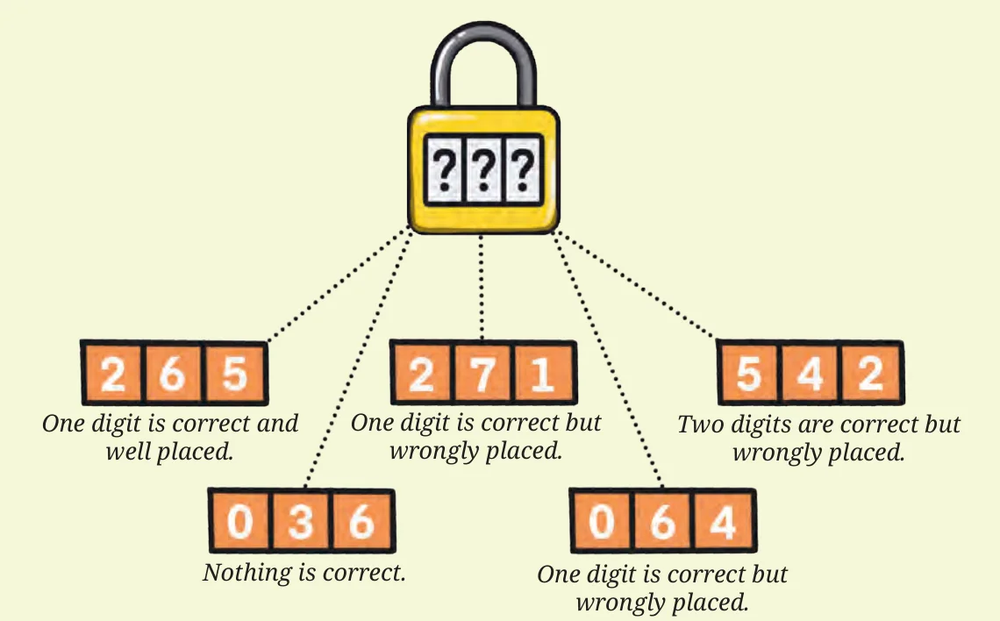

- Dot plots help us get a quick glimpse of the variability of the data — minimum, maximum, range, and how data is clustered or spread out.
- The Arithmetic Mean \(= \frac{\text{Sum of all the values in the data}}{\text{Number of values in the data}}\).
- The Median is the number in the middle of any sorted data. If there are an even number of values, then the median is the average of the two middle numbers.
- We can describe and compare data in several ways including by referring to the minimum, maximum, total, range, arithmetic mean, and median.
- We learnt how to read and make clustered bar graphs. These graphs can be used to compare and visualise values across categories and across time.
- Examining data can lead to new questions and directions to probe further.
Connect the Dots…
A number lock has a 3-digit code. Find the code using the hints below.

- \(265\) — One digit is correct and well placed.
- \(271\) — One digit is correct but wrongly placed.
- \(542\) — Two digits are correct but wrongly placed.
- \(036\) — Nothing is correct.
- \(064\) — One digit is correct but wrongly placed.